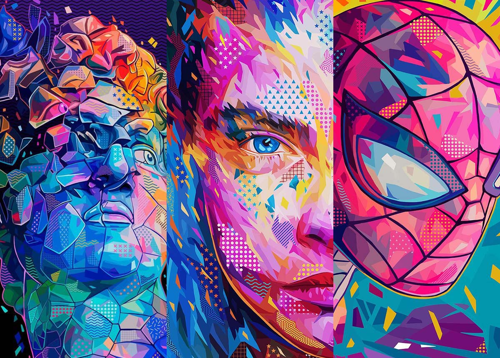

Artes Visuais
As artes visuais abrangem diversas formas de expressão artística que podem ser percebidas principalmente através do sentido da visão. Isso inclui pintura, escultura, desenho, fotografia e outras formas de arte que criam obras visuais.

As artes visuais abrangem diversas formas de expressão artística que podem ser percebidas principalmente através do sentido da visão. Isso inclui pintura, escultura, desenho, fotografia e outras formas de arte que criam obras visuais.
As artes performáticas envolvem apresentações ao vivo, muitas vezes diante de uma plateia. Isso inclui teatro, dança, música, ópera, entre outras formas de arte que requerem uma performance ao vivo.
As artes digitais referem-se à criação artística que utiliza tecnologia digital como meio de expressão. Isso inclui arte em computador, animação digital, design gráfico, entre outras formas de arte que utilizam ferramentas digitais.
A arquitetura e o urbanismo são formas de arte que envolvem o projeto e a construção de espaços habitáveis. Isso inclui a criação de edifícios, planejamento urbano, paisagismo e outras formas de design espacial.

| Nome | Nascimento | Contribuição |
|---|---|---|
| Frank Lloyd Wright | 1867 | Arquiteto pioneiro do movimento moderno, conhecido por suas obras orgânicas e inovadoras. |
| Oscar Niemeyer | 1907 | Arquiteto brasileiro famoso por seus projetos modernistas, incluindo a cidade de Brasília. |
| Zaha Hadid | 1950 | Arquiteta iraquiana-britânica conhecida por suas formas inovadoras e arrojadas. |
| Jan Gehl | 1936 | Urbanista dinamarquês, conhecido por promover cidades mais humanas e acessíveis para os pedestres. |